模块简介
网页媒体播放器定位于在影院级daily审核之前，组长及总监能在线快速审核一个或者多个版本。
页面预览
主要分为视图、时间线、任务信息三个区域。
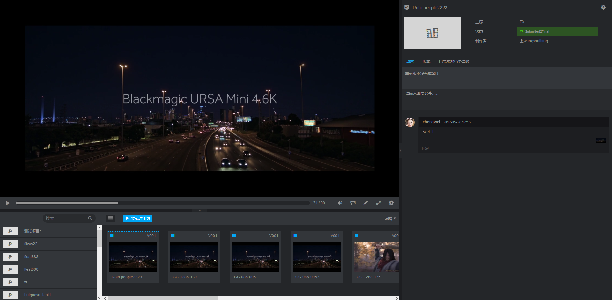
时间线
1. 添加审核版本
左边面板可以搜索查询系统中可以审核的版本。
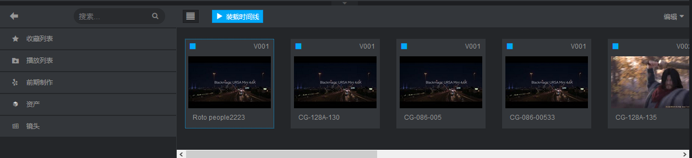
点击加号把当前审核版本添加到时间线
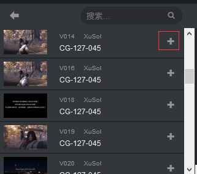
点击编辑->保存播放列表
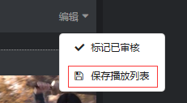
2. 标记已审核
点击编辑->标记已审核，当前为播放列表时候，标记整个播放列表为已审核。如果打开的是单个审核版本，则标记当前版本为已审核。
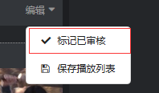
3. 加载时间线
点击加载时间线按钮，播放时间线。
视图
1. 播放控件
从左到右依次是：播放按钮、播放进度条、声音、循环、截图、最大化视图、更多设置。
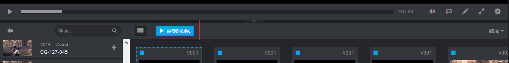
2. 显示当前版本媒体元数据
点击 更多设置->元数据，或者按键盘上 “i” 键，显示当前版本媒体元数据。
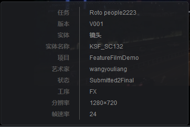
3. 截图
暂停播放->点击截图，截取当前审核版本当前帧截图。
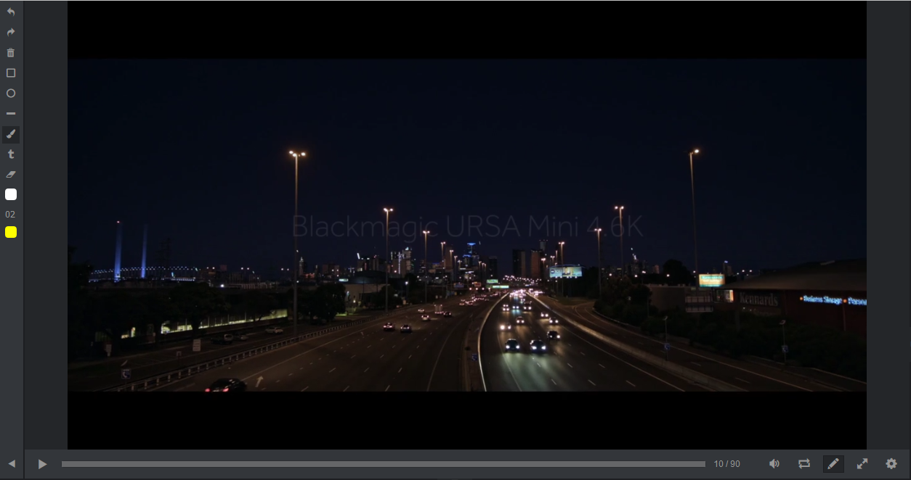
4. 画图控件介绍
依次为，撤销一步画笔、重复一步画笔、清除画布、绘制矩形、绘制圆形、绘制直线、画笔、文本框、橡皮擦、文字或图形内部颜色、画笔粗细、图形边框颜色。
绘制矩形：
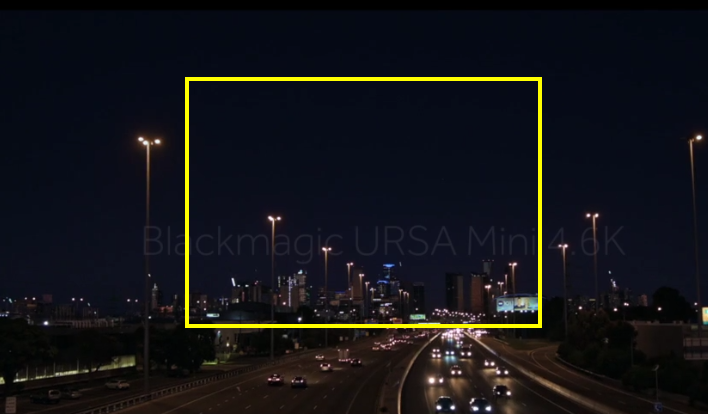
绘制圆形：
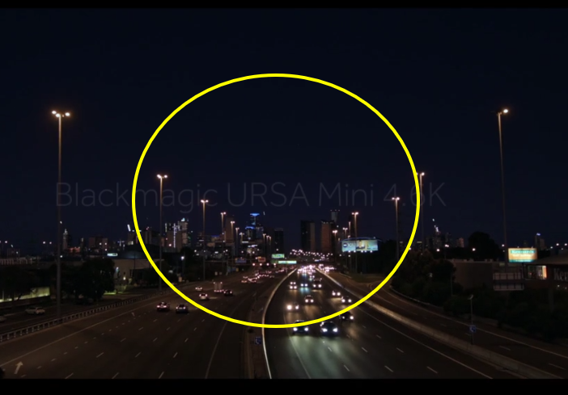
绘制直线：
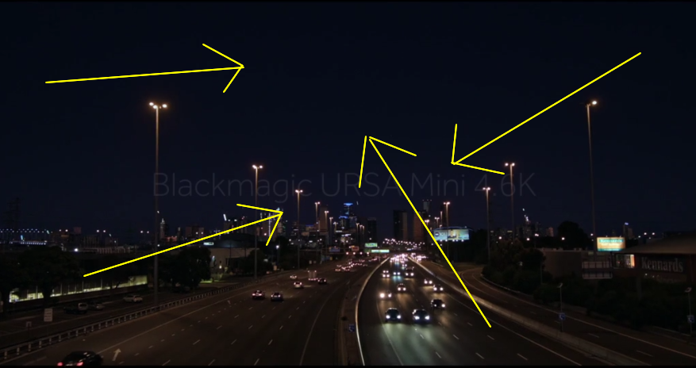
画笔：
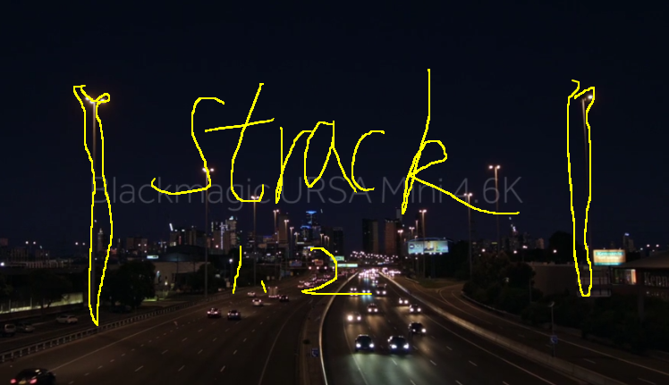
文本框
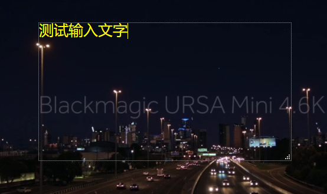
5. 保存截图
再次点击截图按钮，保存当前帧截图。
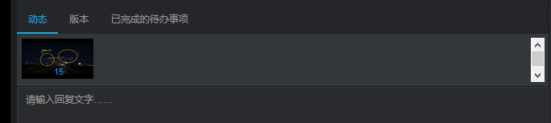
任务信息
显示当前审核版本所属任务信息。
1. 修改任务状态
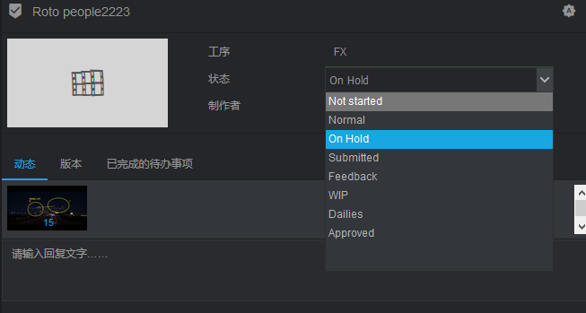
2. 任务动作
具体操作请看动作介绍章节。
3. 添加审核意见
选择一帧或者多帧截图，填写反馈内容
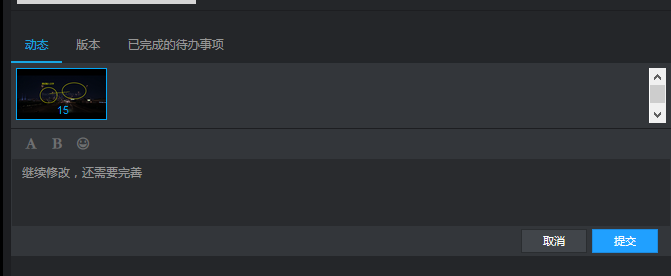
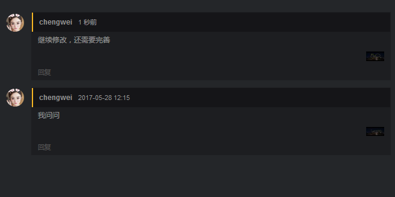
客户审核界面
客户审核不需要登录当前系统，通过生成的有效会话地址来访问进行审核操作。
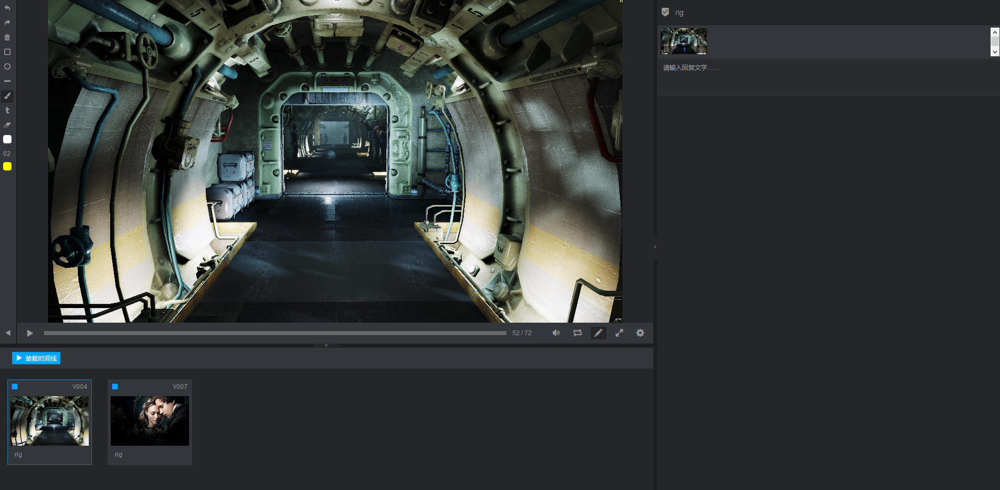